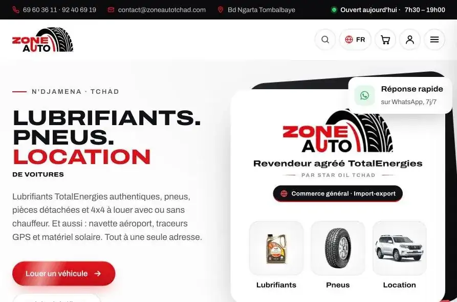
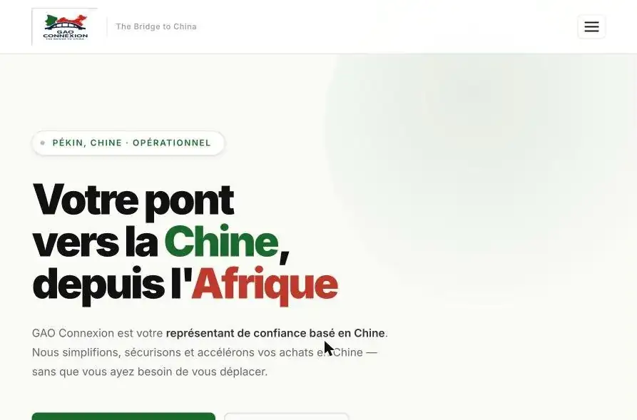
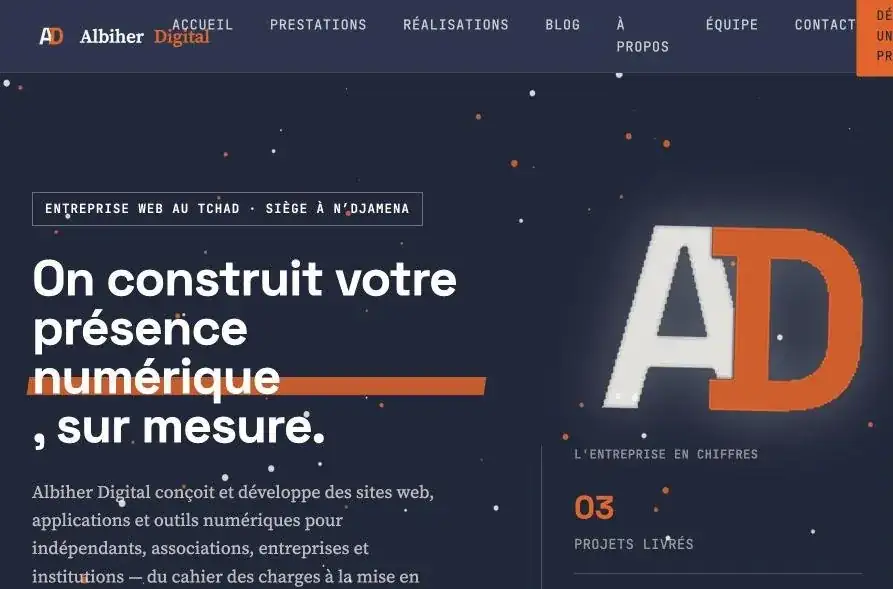

Front-end
Intégration de maquettes, mise en page responsive, interactions en JavaScript sans framework.
Utilisé sur : GAO Connexion, Boutique en ligne, ce portfolio
Disponible en alternance à partir de septembre 2027
Développeur web junior
Je construis des sites et des applications web, de la maquette jusqu'à la mise en ligne. Front-end, back-end Node.js et PHP, bases de données MySQL, WordPress et e-commerce.
const oumar = {
role: "Développeur web junior",
formation: "Bachelor SUPINFO, 2e année",
stack: ["JS", "Node.js", "PHP", "MySQL"],
alternance: "sept. 2027",
ville: "Lyon",
};Je suis étudiant en 2e année de Bachelor informatique à SUPINFO, après une 1re année de BTS SIO option SLAM validée à Ynov Lyon. J'aime les projets concrets : comprendre le besoin d'un client, construire la solution et la voir tourner en ligne.
En parallèle de mes études, j'ai fondé Albiher Digital, une agence web au Tchad avec une équipe sur place. J'en suis le développeur web : c'est là que j'ai livré mes premiers sites clients, de l'achat du nom de domaine jusqu'à la mise en production.
Pendant mon stage chez AD Numeric, j'ai travaillé sur des boutiques e-commerce en production (Shopify et PrestaShop) : audit, performance, SEO technique et intégration.
Je cherche une alternance en développement web à partir de septembre 2027 pour progresser au sein d'une équipe.
Ce que j'utilise vraiment, et sur quels projets.
Intégration de maquettes, mise en page responsive, interactions en JavaScript sans framework.
Utilisé sur : GAO Connexion, Boutique en ligne, ce portfolio
Routes et API REST, authentification par JWT, upload de fichiers, génération de PDF côté serveur, envoi d'e-mails.
Utilisé sur : GAO Facture, LifeArchive, site Albiher Digital
Conception des tables, requêtes, connexion depuis Node.js et PHP, bases hébergées (Clever Cloud, OVH).
Utilisé sur : GAO Facture, LifeArchive, site Albiher Digital
Création de boutique WooCommerce, audit d'applis Shopify, modification de thèmes PrestaShop.
Utilisé sur : Zone Auto, stage AD Numeric
Nom de domaine, hébergement, e-mails pro, redirections, variables d'environnement, déploiement continu.
Utilisé sur : tous les projets en ligne
Diagnostic de performance, correction de décalages de mise en page, vérification des données structurées.
Utilisé sur : stage AD Numeric
En cours d'apprentissage : React, Docker, Java, C++, automatisation avec n8n.
AD Numeric, agence e-commerce
Albiher Digital, agence web avec une équipe sur place
SUPINFO
Ynov Campus Lyon
Algorithmique, bases de données, développement web, réseaux.
Chaque projet est expliqué en détail : le contexte, ce que j'ai fait, les choix techniques et le résultat.

Boutique en ligne pour un revendeur de lubrifiants, de pneus et de location de voitures à N'Djamena.
Le client est un revendeur agréé de lubrifiants TotalEnergies qui vend aussi des pneus et loue des véhicules. Il n'avait aucune présence en ligne et voulait que ses clients puissent voir les produits et commander facilement.
Site en ligne depuis octobre 2026. Prochaines étapes : Google Search Console, fiche Google Maps et newsletter.

Site vitrine multi-pages pour une entreprise qui accompagne les achats entre l'Afrique et la Chine.
Une entreprise d'import-export basée en Chine avait besoin d'un site pour présenter ses services à des clients africains et recevoir des demandes.
Un site statique en HTML, CSS et JavaScript : rapide, peu coûteux à héberger et simple à maintenir pour un site vitrine. Formspree évite d'avoir un serveur juste pour envoyer des e-mails.
Site en ligne sur gaoconnexion.com. Le même client m'a ensuite demandé son application de facturation.
Application de facturation pour GAO Connexion : création de factures, PDF avec logo, plusieurs devises et envoi par e-mail.
Le client faisait ses factures à la main, en plusieurs devises selon ses clients (FCFA, euro, dollar, yuan). Il voulait un outil simple pour les créer et les envoyer.
Application en ligne et utilisée par le client pour ses factures.

Le site de l'agence, avec une petite API en PHP, un espace d'administration sécurisé et la gestion des messages de contact.
L'agence avait besoin d'un site pour présenter ses prestations et ses réalisations, et d'un back-office pour lire les demandes des clients.
Le back-end était d'abord prévu en Node.js. Je l'ai réécrit en PHP pour qu'il tourne sur un hébergement mutualisé OVH, moins cher et suffisant pour ce besoin.
Le rattachement du nouveau domaine à l'hébergement était bloqué par un problème côté OVH. J'ai identifié la commande en cause et suivi le dossier avec leur support.
Gestionnaire de documents personnels : chaque utilisateur se connecte, envoie ses fichiers et les retrouve classés.
Construire une vraie application full-stack de bout en bout : inscription, connexion, stockage de fichiers et API REST.
En le mettant en ligne sur Railway, j'ai dû corriger plusieurs erreurs classiques : ports et identifiants écrits en dur (passés en variables d'environnement), tables manquantes en production, adresses « localhost » restées dans le front-end.
Application interne pour gérer les clients, les devis, les factures et l'avancement des projets de l'agence.
Avec une équipe répartie et plusieurs clients, l'agence a besoin d'un seul outil pour suivre le commercial et la production.
Le cahier des charges est rédigé. Prochaine étape : le schéma de la base de données.
Boutique de démonstration en JavaScript sans framework : catalogue, filtre par catégorie, panier et page de réclamation.
Maîtriser la manipulation du DOM et la gestion d'état en JavaScript pur avant de passer à un framework.
Assistant qui répond automatiquement aux questions des clients.
Vous cherchez un alternant en développement web pour septembre 2027 ? Écrivez-moi, je réponds rapidement.
msoumarabdelkerim@gmail.com